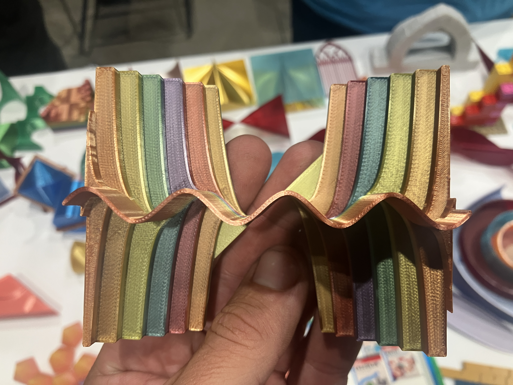
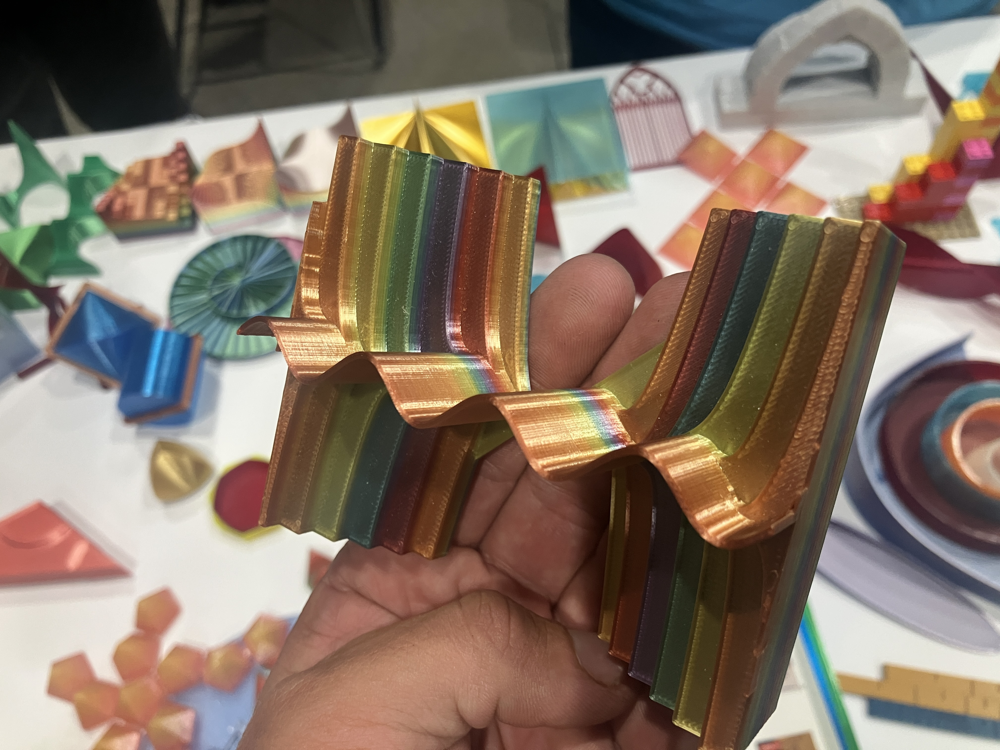
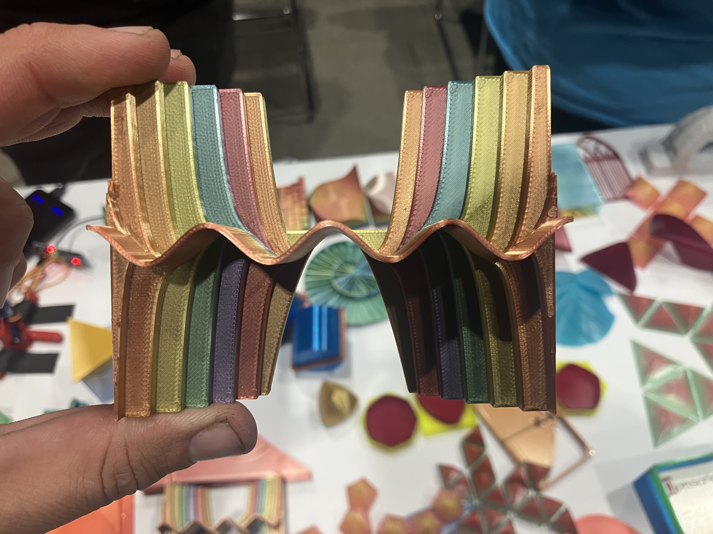
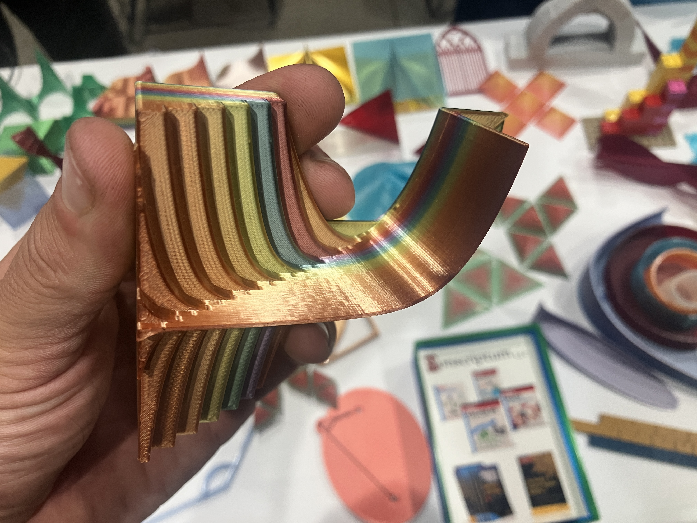
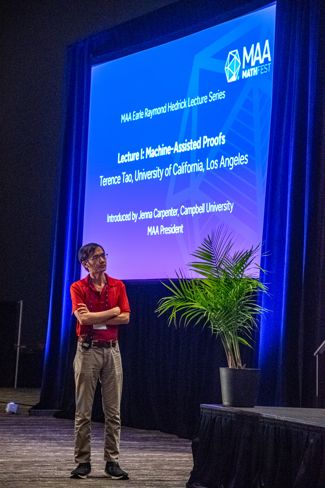
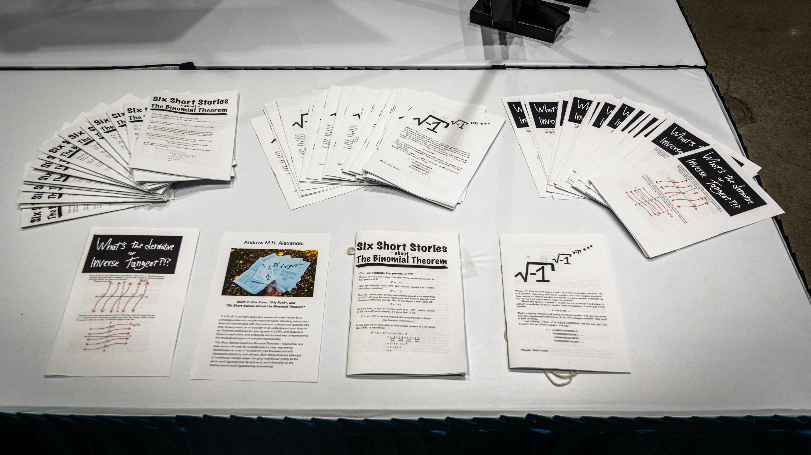
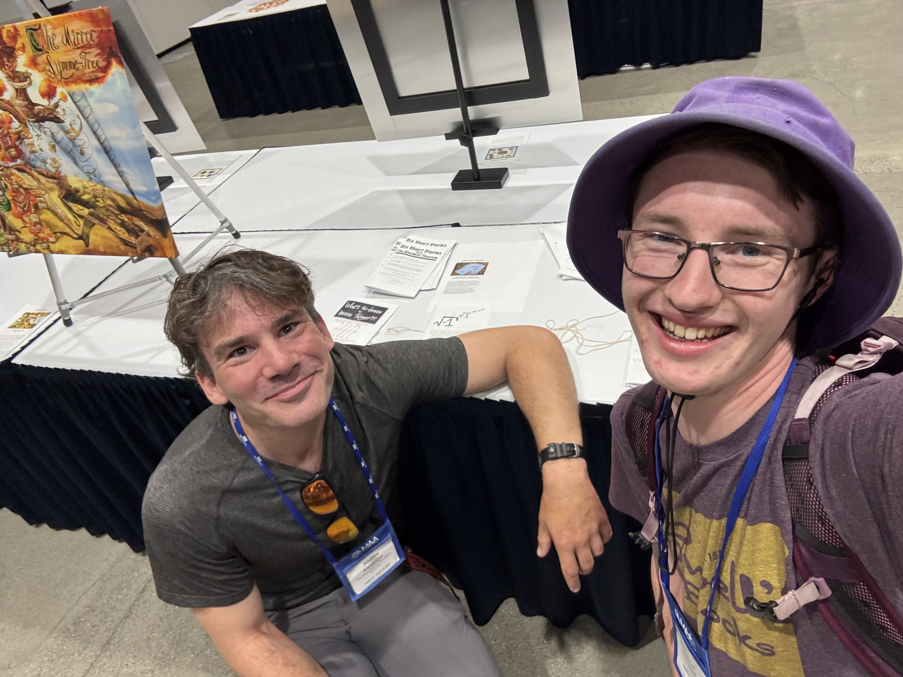

mathfest notes
TODO clc guys quotes bad calc lecture mathphil leecture and POWER and politics again
Lipstick on a Pig
There were lots of more math-oriented
tristan needhan
Hi friends!
I spent the last few days before school started not at the Giftedness Institute like many of you, not clinking drinks in Cabo (like others, based on your Instagrams), nor enjoying a final few days in the Sierra—but in Sacramento, at MathFest, the Mathematical Association of America’s annual conference. When I went to the JMM along with some of you in 2024, I wrote up some emails about the experience for those of you who couldn’t make it, and I’ve done the same here. I wanted to wait until the year was underway to share about the conference; since I wrote so much, I’ll try to drip this out episodically over the next week or two.
MathFest It was a delightful four days of math, dry heat, and a not-that-surprising cameo from one of our former students. I saw some truly spectacular public talks, and I got to drool at the titles of all these talks about teaching differential equations and complex analysis and calculus (and not go to anywhere near as many as I wanted). I also got to see a number of very depressing talks
themes of power and systemization
(And I’ll try to keep them brief.)
Obvious point that will betray my inexperience and naiveté, but having now been to THREE math conferences in the last 18 months on Nueva’s dime (thank you, Lauren and Liza! thank you, tuition-paying parents! genuinely!), it’s fun to see the same people recur. The cool elderly emerita who’s a mathematician but really interested in philosophy of math who wears a mask and has her hair in a MULLET. The history-of-science guy who works on Euler and bears a stunning resemblance to my favorite-ever high school English teacher! I’m reminded of the years I spent going to punk shows in Phoenix in my 20s: it’s the guy who’s always trying to bum a cigarette! it’s the guy from whom it’s always possible to bum a cigarette! cute tattoo girl! so-and-so’s housemate’s friend’s partner!
Showdown in Meeting Room 3
Wednesday I took the train to Sacramento, biked to the convention center, and jumped straight in. The first talk I heard was a panel discussion. Were not it about a subject that I care deeply about, a subject I’ve devoted my entire professional career to, it would have been hilarious.
“That was like a Real Housewives episode!,” someone said as we were walking out.
A few moments earlier, the moderator: “It’s 5:18 and I don’t think we can take another question in the remaining two minutes.” The audience laughed.
“So, uh, I’m going to stop us here and we can, uh, all take a deep breath, and—there’s a lot of passion—about calculus and success—and I’m excited—that we’re all excited—about doing what we can—that’s best for students.”
A showdown: one guy from the California Community Colleges (CCC) chancellor’s office versus the four other panelists and the entire (crowded) room.
The longer it went on, the more contentious it became, and the more and more I felt like an alien. The power dynamics being described were straight out of Robert Caro; the bureaucratia, David Foster Wallace. There was constant mention of placement testing and “throughput” and “assessment” and “validating courses” and “data” and some computer system (???) named “ALEX” (???) that I couldn’t figure what it was. Panelists kept mentioning “the December 10th memo from the Chancellor’s office.” It wasn’t clear to me what that was about, and given the contradictory ways it was described, it wasn’t clear to them, either.
I found myself growing sympathetic to the Chancellor’s office guy. I was surprised. He’s some educational bureaucrat, of the type I’ve fought since literally I was a teenager (don’t Google me too closely), and because the actual issue that was being discussed (a law he supported) seemed like something that (on a gut level) I’d oppose.
I wondered how much of that was because he was a good speaker. Not good in a way that stood out, not unless you were looking for it. But good in subtle ways that, when I started looking, became apparent. The rest of the panel were perfectly fine speakers—especially by the standards of mathematicians—but if you mod’ded out the content of what everyone said, this guy was way better at speaking. I thought of how really great salespeople don’t make you think that they’re salespeople, and so the stereotype of what a salesperson is (the sleazy hard-seller) is a selection effect on bad salespeople. He was framing himself as an opponent of the educational status quo. That appeals to me! “Andrew, this guy is a literal late-middle-aged balding bureaucrat in a suit—how can you possibly like him?,” I kept thinking. But you don’t get to a job like his without being very good at accumulating power. Charisma can be subtle. His cadence and pitch varied in ways that felt pleasing; his hand gestures were consistent and coordinated. All of that was regardless of the actual content of what he was saying. (Fertig is the same in this respect. So is Barry Treseler, whom I adore.) That’s the Robert Caro part.
What was the actual dispute? There were lots of conflicting stories, but the short version is that the State Legislature passed a bill in 2022, AB1705, which requires community colleges to—well, exactly what it requires was part of the debate—but, as the abstract for the panel put it, requires community colleges “to place most STEM students directly into Calculus 1 by Fall 2025, regardless of their previous coursework.” Never having heard of it until that morning, my gut (mild) feeling was that it seemed like bad-but-typical-for-California state overreach. Having sat through the panel, I’m now quite certain I do not have an opinion on whether the law is good or bad. Just that—like basically everything in the math education world—it’s orthogonal to math education.
It seems like the law was actually initiated by the Chancellor’s office. From glancing at the abstract I had assumed that it was one of these chaos-monkey legislature initiatives. But no. I guess the Chancellor’s office has very little actual power over community colleges, or at least not as much power as they’d like, so to make this “everyone gets into calculus” mandate they had to get an actual law. The law is an expansion of a previous, weaker law, which the chancellor’s office guy says that the colleges had just subverted/loophole’d their way out of. In his framing, the colleges were effectively preventing too many students from taking calculus by forcing them to retake prerequisites they had already met. It’s an equity issue, he said. He even framed it, at one point, in terms of helping teachers: the placement testing the CCC did is so bogus that “we were just putting students into mathematics willy-nilly, and math faculty were frustrated with that.” Of course none of the real live actual community college math faculty in the room shared that view. In their view, the colleges had had flexibility to adapt to students and populations as they needed, etc., and this law took that away from them. One of the panelists was explicit about how the Chancellor’s office was using the guise of “equity” to continue consolidating power and continue making community colleges more standardized and identical and lockstep. (I’ve heard K12 administrators make the same rhetorical move. Excellence guillotined in the guise of equity. Homogeneity as the greater goal.)
The only thing everyone agreed on is that whatever system-wide math placement testing the CCCs used previously was terrible. In the florid words of the CCC guy: “The [placement] assessment is crap. That’s the technical term here.” The placement tests and the students’ subsequent CCC math performance “had zero correlation.” Later he made a derisive comment about “paying tens of millions of dollars to corporations” for these placement tests. (See how easy it is to love someone who speaks so stridently?? But fall too hard for that and you get populism, and you get Trump.)
Everyone also agreed that grade inflation was a giant problem. They each accused the other side of exacerbating it.
One of the panelists was a math prof at Cal Poly—he was there to represent a different aspect of California secondary math education, but one that often dovetails in (or from, rather) the CCCs. He kept talking about how sophisticated and data-rich and predictive their internal placement testing was. They correlate it against students’ high school/CCC courses and GPAs: the correlation “isn’t great.” Actually, this was cool: he said they keep the precise internal placement test numbers confidential and then, when kids are right on the edge, they place them in the higher or lower course randomly. A regression discontinuity experiment!!!! Or maybe they just do regression discontinuity on their placement tests without doing the actual experiments? Unclear. (Have we played around with this at all? I think of the very cool scatterplots that Kathy showed at the end of last year relating placement test and Algebra Techniques performance.)
But it all feels like a shell game to me. Seeing Like a State is the other relevant book here (or James C. Scott the other relevant author). When we do things at scale, we have to do them in ways that are legible. That means numbers, and procedures, and rules, and algorithms. It means Data. The CCC system teaches two million students per year across 116 separate community colleges (facts which came up in passing). Maybe it’s a slur to talk about “cogs in the machine” but that really was the implicit conception of education that every single person on the panel, and everyone who asked a question during the open question period, seemed to have. We’re building a machine here! They were just arguing about how to build the machine. Even the professors who advocated “flexibility”—still everything they said was about mechanics. I think of Paul Lockhart’s comment about the artificiality of it all: “There is no such thing as an ‘Algebra II’ idea.” Maybe it’s unfair to have expected different. And what do I know about what it’s like to teach junior college in Bakersfield? Or even “Calc III” to engineering majors in SLO? It just seems to me like the fundamental humanity of education—even math education, so misunderstood as being about formulas and facts—gets crushed in the cogs and mangled into something quite different.
The panel abstract described the CCC guy just as representing “California Community Colleges Chancellor’s Office.” The internet says he is the Executive Vice Chancellor for Research, Analytics and Data, heading “the new Office of Innovation, Data, Evidence and Analytics” where he has “helped to reimagine the role of data, research, and evidence, working to rebuild that capacity within the system office to better serve colleges and their 1.8 million students.” Clearly he believes in what he’s doing. The faculty members on the panel and in the audience who were so aggrieved were fighting a battle that seemed, to me, pointless either way. But what do I know (again) about all of their constraints? It’s not even that the constraints restrict how they can act. Constraints restrict our vision. Our dreams of what’s possible, of what mathematics and teaching and education really can be, the true formation of souls, is clouded by cataracts. Those cataracts are congenital. So how can you know better? How can you have a different vision?
I left the panel entertained and discouraged. I saw a tweet a few months ago, as a response to a video of some typical thing Trump said: “He would be the funniest person in the world if he wasn’t also the most evil person in the world.” It’s all deck chairs being rearranged into kindling. I think of myself as a Burkean about most things, but about education, and especially math education, I’m full 1789. CalFire’s tankers and hotshots won’t be able to contain the wildfire sparked by LLMs. But it’s going to be a cleansing fire.
Here’s something cool I saw in the exhibit hall. I literally squealed with excitement when I saw these.
I’ve attempted to make similar 3D visualizations before, but these were not just computer renders but 3D prints, color-coded, of exactly that thing. I’m so excited about it I don’t even want to tell you what it is. (Spoken like a true math teacher!) Instead, I’ll show you pictures, and ask you what it is. (You can re-assess if you don’t get a 4. Please sign up for a tutorial spot on my Calendly to do so; there’s a link on Canvas.)
Here’s the first object, two views:


The second:

And the third:

What is it, friends? WHAT IS IT?!?!
You think I’m kidding? Nope, I’m not; here’s a Google Form link to submit your guesses. Credit here goes to Nonscriptum, a group of ex-MIT 3D printing hackery types, who had a booth full of gadgets.
Calculus Radicalized
LKINK AND TITLE AND NAMES TBTBTBTBTB
The second talk I went to was more uplifting. It was two retired guys, wearing identical Hawaiian shirts with floral designs and math symbols on them, pitching their calc textbook and ideas for how to teach calc differently. (They weren’t making money of the textbook, they emphasized—it was all free and online, or, if you want a print copy, there’s a print-on-demand version they sell at cost.) This is, of course, a subject very very dear to my heart, and something I’ve had constant conversations with people with since 2009.
We agree completely on the core issue: the insane misplaced rigor in the standard calculus curriculum. Lockhart has a line about how we’ve confused introductory intuitive calculus with rigorous analysis. These guys had a vivid phrase: “Did you first learn to drive a car, or tear apart the engine?” In calculus, “that’s the position your students are in. We teach them to tear apart the engine before they even know how to drive.”
FIVE MILLION PERCENT. I have been screaming this since 2009. It’s not hard to find people who agree with me; it’s just hard to find people who agree with me who are actively teaching calculus. (These dudes are retired. Maybe they don’t count?)
“Think about when you’re doing your own research in mathematics. Do you worry about foundational issues? Do you use foundational set theory? You’re solving a problem, a very specific problem, and you don’t worry about the foundational stuff. That’ll come later.”
They made a point that I’ve been screaming about for years: the Standard American Calculus Curriculum STARTS with limits, even though limits are “the solution to a problem that students don’t understand and can’t appreciate.” Limits should come LATER, after the kids realize that they’ve been dividing by zero. “At the beginning of our calc classes, we talk about continuity and differentiability. Students are not in a position to understand why that’s important.” YUP.
“People accuse us of trying to take the rigor our of calculus. Nothing could be further from the truth. We’re trying to put the rigor back in” My gut response: I am! I’m trying to take the rigor out of calculus! Or rather, I’m trying to take the PHONY rigor out of calculus, so that a truer understanding of how it actually works can emerge. That’s what infuriates me about the Standard American Calculus Curriculum. It’s all PHONY rigor, not real rigor.
The subtitle of their book is “From Practice to Theory.” Yup. Right order.
The problem is, EVERYONE teaches calculus the same way. At least, that’s how all the textbooks and all the formalized systems do it. There are plenty of individual mavericks, like them or me or Paul Zeitz or my friend Alec Resnick in Boston, but institutionally, it’s all identical. It’s bothered me for years. Calculus is a rich, deep, intellectual subject. Like everything else that rich and that deep, it can be approached in so many different ways. It’s like a folk song or a folk story, in the analogy I’ve been using the last year. There are lots of ways to tell it! Yet for some reason there’s this “Standard American Calculus Curriculum” that we’ve decided IS calculus. We’ve decided that a particular arrangement of the song, recorded in a particular studio and mixed in a very particular way, once, IS the song, rather than one out of many possible instantiations of the song.
That’s all my description, not theirs. But they said stuff very similar. And they had an EMPIRICAL argument to back it up. One of them went to the SUNY Fredonia library and checked out every calculus textbook the library had. He came home with a stack of books dating back to the 1930s. Every one of them had the exact same table of contents. Yup. Zero surprise.
“I don’t believe that in the 1930s we found the perfect way to teach calculus,” one of them said. “We’ve been teaching it the same way for 100 years and it’s not been working. What’s the definition of insanity again?”
They gave a historical outline of the development of calculus, showing how the order in which we teach it is the exact opposite of how it was developed. Again, not news to me, and the historical order isn’t dispositive—in fact my sense is that the historical order of how most ideas are developed is generally NOT the right way to teach them—but still, here, it felt damning. Excerpt:
Formal definition of a limit: Weierstrass, 1874
Limit definition of a derivative: Cauchy, 1823
Continuity and the intermediate value theorem: 1817
… etc. …
Calculus actually created: 1665
Anyway, sounds like they have lots of ideas, and sounds like they gave another talk at last year’s MathFest on a different specific idea they have for tweaking teaching calculus. But this talk was, nominally, about how we should start calculus by teaching differentials. In other words: we normally start with derivative calculus, but we should start with differential calculus, i.e. just the bare differentials themselves. Then we can divide them to get slopes or integrate them to get areas. (The title of the talk was “We integrate differentials, not functions,” which one of the speakers said it had taken him 40 years of teaching calc to recognize.)
So, in particular, we can start with three rules for the manipulation of differentials:
- the differential of a constant is zero: \(d(k) = 0\)
- sums split up: \(d(x+y) = dx + dy\)
- the product rule: \(d(xy) = xdy + ydx\)
And then you can get everything else out of that. Yes, even the chain rule—this was the immediate objection of an audience member, which they anticipated, and had a really great slide showing step-by-step how to do it, buttressed with some historical fun-facts about how Leibniz and Newton didn’t even use a special word for the chain rule, because in this particular formalism (just doing things with differentials), it comes through obviously and naturally. Interesting.
I ran into one of the speakers on Saturday at a talk about using AI to help translate old Latin mathematical texts, and we chatted (again) afterwards—he told me that a lot of his ideas came from reading and translating Euler in the original (!)(he did not seem like a guy who was reading Latin in his spare time). A lot of the work there is just translating the old math notation into contemporary notation (this surprised me—I’ve always had the impression it’s so much more than just that, but I guess he was doing stuff that’s basically survived in its same form modulo the notation) and if you do that, then this is exactly what Euler was doing—starting calculus by doing differentials. Something like that.
Their approach was similar, although different, from how I saw Paul Zeitz introduce calculus in Jackson Hole in February. PZ’s approach was to think of everything as being a small error term:
\[x + \Delta x\]
and then expanding or manipulating from that, and dropping all the higher-order terms, e.g.:
\[\begin{align*} (x + \Delta x )^4 &= x^4 + 4x^3(\Delta x) + 6x^2(\Delta x)^2 + 4x(\Delta x)^3 + (\Delta x) \\ &= x^4 + 4x^3(\Delta x) + \cancel{6x^2(\Delta x)^2} + \cancel{4x(\Delta x)^3} + \cancel{(\Delta x)} \\ &= x^4 + 4x^3(\Delta x) \end{align*}\]
“Stay cool; avoid HOT!” was his catchphrase. Because this was a skiing-themed math camp in Jackson, the pun was either appropriate or ironic; I couldn’t figure out which.
And of course my own approach to calculus is different from both of these—I take a more geometric, and less symbolic, start. Or at least that’s how I’ve done it in the past, but again, there are even more paths through the possibility space!
After the talk I went up to chat with the speakers—mostly just to say, thank you, you get it, it’s always so gratifying to know that I’m not alone, you can’t say all this stuff loudly enough, I’m excited to check out your textbook, etc.
Right next to me was someone who came up to complain that there was a typo on slide 12 on line 3 (or something to that effect). What a great example of… exactly the point the speakers were trying to make, of avoiding misplaced rigor! Whatever this typo was, it was irrelevant to the broader point the speakers were making. Not only that, it was irrelevant to the broader point of that single slide. It didn’t impair communication or understanding. Yet this grouch was upset that there was a Typo and it was Wrong and this was a Problem. What a reminder that the biggest obstacle in math education isn’t balding bureaucrats (like the guy from yesterday), but math educators themselves. A self-perpetuating cycle of micro-oriented macro-missing myopes suspicious of the smallest innovations.
Also, in passing, one of their slides was a demonstration of how to prove the power rule using these ideas of differentials—and (modulo the fact that it was with differentials and not derivatives) it was the same proof that occurred to me (for the first time) this summer at 6:30 AM in a coffee shop in Jackson Hole as I was waiting to meet up with Spencer. I later scribbled it down in my trail journal, as I was bored and frustrated, halfway through the Wind River High Route. I called it the “scenic route” version: if you have the generalized power rule (a product of not two functions, but of \(n\)), then you can get the power rule (for pos integer powers) as a special case. The argument I’ve used in the past for the power rule has just involved a lot of hacking from the definition of the derivative. (We did a fun proof from Axler this past year in linalg that involved the generalized power rule, so it’s something I’ve been playing with the last few months.) (Links go to my own notes on all this stuff!)
In summary. Calculus teaching. More diversity desperately needed. Possibility space so big.
QUOTES I TOOK PICTURES OF TKTKTKTKTT
complex-numbers/eulers-identity
what’s one idea you have for how to improve calculus teaching?
“Burn it all down!,” I said, cheerfully.
Hi Beth,
I just wanted to drop a quick note to thank you for the FANTASTIC talk at MathFest last week!!!
The Math in the Mountains shoutout was a total surprise and exciting—I taught at the experimental February break skiing-themed version that ran this year (I think I was the only person Paul and Lora could find last-minute!), and a couple of my colleagues (I teach at a school for smart nerdy kids in the Bay Area) were at the teacher program this summer.
Beth Malmskog’s Quilting Circle
Talk #3. “Chronological” is generally a bad organizational strategy, but so far, I think it works, because the narrative by this point of my time at MathFest is of INCREASING mathematics, INCREASING excitement, and DECREASING depressing BS.
(Terry Tao was Talk #4, so I thought the pattern might continue, but nope, this talk was Thursday’s max math and max fun.)
So here’s the deal! This speaker was so great and so enthusiastic and reminded me, perhaps only because I re-watched it recently, of Jodie Foster’s character from [Contact](https://en.wikipedia.org/wiki/Contact_(1997_American_film). She’s Beth Malmskog, a number theorist at Colorado College, who grew up in Wyoming, went to the state university there, and got a Ph.D. from Colorado State. During grad school she was a DJ on the college radio station. Among other things she had a call-in math question show. “I was trying to be like Klick and Klack from Car Talk,” she said. The best question she ever got was from one of her buddies, so-and-so, one of her musician friends—she hosted an open mic night at the coffee shop she worked at in undergrad—the friend has subsequently had a successful music career or something, but I forget his name—and the question came from the dude’s mom, Judy, who was a quilter, and organized a quilt exchange in her quilting circle in her rural Wyoming or Colorado or wherever town. The idea was this: you quilt part of a quilt (like a square of a quilt, or maybe a border around an existing square), and then you pass it to the next person, who quilts another square (or another border?), and then they pass it to the next person, and so forth, and meanwhile everyone else is doing the same thing, and at the end they all have beautiful quilts that everyone has played a role in quilting!
So the question is: given a group of quilters, how do you assign the network of who passes to whom? You have five quilters (say), all making five quilts. The obvious way is to just make up a network and then repeat it five times. I get a quilt, I add my contribution, then I bring it over to Roya’s house for her to add the next piece. And I do that five times.
But this misses the point, because the whole point is, this is rural Wyoming, and so the real point is getting to interact with your friends. You drop off the quilt, and the next person invites you in for coffee “and a slice of coffee cake” (that’s a thing?!?). So if I do that with Roya five times, great, but what about the other three people in our quilting group?
So Judy’s question—which she, as a smart but not mathematically-experienced person, had thought at length about and tried to work out—was, given a group of \(n\) people making \(n\) of these collaborative quilts, are there \(n\) distinct ways to pass off the quilt pieces so that each person gets to go over to each other person’s house to drop off the quilt (but really to socialize) at least once? (And if so, how do you generate those networks?) For \(n=2\), the answer is yes. For \(n=3\), you can draw it out, and see that the answer is no. For \(n=4\), you can, with a some effort, figure out a network that works. What about \(n=5\)?
(As I write this I am now thinking back through this talk, but with the voices of Klick and Klack from Car Talk narrating it as a dialogue.)
MAYBE ADD A PICTURE JHERE
You can model it with Latin squares! (Which is so appropriate, because they also make such beautiful quilts!) You can think of these exchanges as being Latin squares where each row represents an individual quilt, each column represents a step forward in time/quilt construction, and the colors represent the quilters. So, phrased as a Latin square, can you make a Latin square where no adjacent row-pair of colors repeats? Fun question! She got excited to work on this problem but (either before or after figuring it out)(I hope it was after!) turns out the first appearance of this in the literature was in 1948, in an applied math (!) context, by some dude doing agricultural statistics, involving experiments where you’re planting things successively in fields and don’t want to repeat the same planting orders across different trials (”because if the corn fixes the nitrogen for the potatoes in the next trial, maybe it’ll mess up the experiment; I’m just making that up; I don’t know anything about agriculture; if there’s anyone still left in the room from the previous talk [about mathematical biology], I apologize”). A “row-complete Latin square” is the name of the structure. \(RCLS(n)\) exists for every even \(n\) (this was the 1948 result); more broadly, \(RLCS(n)\) exists for every composite \(n\) (1998); with some effort you can figure out by hand that it doesn’t work for \(n=5\) and “with a large cup of coffee” for \(n=7\). You can’t do it for \(n=11\), but the speaker hasn’t been able to track down a full argument. \(n=13\) is open. \(n=\text{prime}\) is conjectured (no one’s found an example!) but still open.
And of course there are lots of other cool connections! Graphs! Something called a “sequencable group,” which I’d never heard of, but which is something where, if you operate/product together all the elements in a (finite) group:
\[g_1* g_2 * g_3 \cdots *g_n\]
then every partial/sub-product:
\[g_1* g_2 * g_3 \cdots g_{26}*\underbrace{\Big( g_{27}*g_{28}*g_{29}*g_{30}\Big)}_{\text{some arbitrary partial product}}*g_{31}*g_{32} \cdots *g_n\]
is unique. Anyway, turns out there’s a correspondence:
\[( \text{a sequenceable group}) \quad\iff\quad ( \text{a row-complete Latin square} )\]
(there exists, for order \(n\) of both)
I’m not narrating it as well as she did; the point is, it was really fantastic mathematical storytelling. Engaging, clear, enthusiastic, lucid. Even though this talk was in a massive ballroom (how many people there? hundreds? she was the “opener” for Terry Tao, as she put it at the end), she had someone pass out paper beforehand and paused a few times to make us try to work out some of the Latin squares. “I’m going to make you do work! I’m never not leading a math circle!,” she joked.
Of course ALL mathematics is storytelling; it’s just stories where the characters are abstract objects. (That’s my description, not hers.)
(She also talked, in passing, about leading some math circle in a prison in Philadelphia at one point! And Math in the Mountains got a brief shoutout—she apparently did something at the teacher-prep component of it!)
What a fantastic talk. And what a total pick-me-up from the depressing bummer of math-education-bureaucracy-zombieness.
Oh, and the kicker? This quilting problem, which reduced to the still-open question of for what \(n\) does \(RCLS(n)\) exist? Judy, her musician friend’s quilter mom, solved it!!!
… instead of passing each the quilt’s pieces individually, her quilting group decided to just all get together at each stage of quilt-making to exchange the quilt pieces.
It was about socializing, after all.
Terrified Tao

Each of the 12.4 zillion profiles of Terry Tao written over the last 20 years has described him as “boyish.”
Thursday at MathFest he didn’t look boyish.
His hair is now cut short. In 2024 when I saw him at the JMM in SF, he was wearing a baggy sweatshirt. Thursday he was in a polo. Later on Thursday he sat down at a table next to mine in the hall, and I could see lines on his face and gray in his hair. According to Wikipedia, he just turned 50.
His talk about “Machine-Assisted Mathematics” was a grim, gloomy glimpse of the future.
Proof assistants. They don’t just make us confident in the accuracy of a long or convoluted argument. They enable MATHEMATICS AT SCALE; mathematicians alienated from their labor, straight-up Marx and Durkheim and Dickens. CORPORATE MATHEMATICS. The INDUSTRIAL REVOLUTION, with its smog and child labor and robber barony, brought to mathematics!
That’s, um, not quite how Tao phrased it.
He phrased it positively. And, uh, it seems to me to be positive, too; it’s just that the first thought that popped into my head when he described the situation was “FACTORY!!!” I was still sad about witnessing the sausage-making of factory-scale math education at California Community Colleges the day before. The proof assistants story is actually pretty cool (and really just a small fraction of the talk); it’s just that I started spiraling off in my head to exciting imagery.
Here’s what Tao was actually talking about. If you’re a team collaborating on a proof, you split it up into pieces. Different people work on different pieces. Obviously. You modularize it. That’s not something that’s special to math. You have a handful of people working on a project, and you decide on the overall structure and how to split it up, and come back together to assemble the finished pieces. Maybe the pieces need some adjustment when you put them back together. If you’re a single mathematician working alone, you don’t have that problem. If you’re a small group, you do, but it’s not a big deal. I think of the stories about mid-century German factory workers hand-filing down pistons for precise fit in each individual BMW.
But… as the size of your collaboration increases, fitting together so many hand-assembled pieces gets tougher. “Maybe the conclusions of lemma A, as person #1 worked them out, don’t precisely fit into the hypotheses of lemma B, as person #2 worked them out.” Problems and inconsistencies ripple outwards and have cascading effects. So there’s a cap on how big your collaborations can be. (Of course you want, or need, collaborations in the first place, because there’s a cap on how much any individual can do!)
But if you’re using a proof assistant—even if you’re just using it to put together the pieces of your full argument, rather than make the complete argument from scratch—then this problem can be fixed! Each piece of the puzzle that each collaborator works on is now a precisely formulated statements of inputs and outputs, hypotheses and conclusions. (Or “deliverables,” as the gross corporate word is.) In other words, proof assistants aren’t just technologies that let us machine-verify formal truths. The fact that they do so lets us MODULARIZE formal truths, at scale, in ways that wasn’t possible before! Of course this is also the classic technological story: we build a tool to make an existing task easier, but then once we have that new tool we realize that it has new uses, and there are new things we can do, that we couldn’t even have imagined before we had the tool.
Anyway, Tao described the proof-assistants-allow-big-collaborations stuff, which was just a few minutes of his hour-long talk. It’s objectively really cool, and, like I said, the first word that popped into my head was “factory!” And of course that’s exactly how manufacturing and designing at scale works. “Systems integration” is an entire field of engineering all about making the connections between different pieces of a bigger system or machine! The contrast is to (this is all my language, note) doing stuff in an “artisan” fashion. If you’re a single person making a chair, you don’t have this problem. If you’re designing an assembly line to make chairs, or a machine to make them, you do. If you’re designing a 747… good luck being the single artisan designing an entire 747 from scratch! If you’re building something sufficiently complex, you can’t do it alone. And if you’re not doing things alone, you need to figure out how to fit things together.
(Actually now I am thinking about how people describe, or envision, our future life among AIs as human beings just being the “project managers” for a bunch of AIs doing the actual work. (This is a vision that for the most part makes me depressed. It’s so results-oriented.) So now I’m imagining that mapping on to what Tao was saying… farming out the proof components to AIs, etc.)
So this all relates to doing ANYTHING at scale, and, look, although I’m very very very much not a Marxist, the alienation from one’s labor that happens in these situations has always seemed very real to me, and like a very real problem. I’m sure it’s part of the deal if you’re a community college math instructor trying to teach the students in front of you but also being forced to “standards” designed by someone who isn’t there in the room with you, and who’s maybe never been in the room with you.
Tao’s whole talk was great; this comment about proof assistants enabling bigger and better collaborations was just a minute or two. The talk was lucid and chock full of facts; I really want to summarize the rest of it, because it was so clear (was not expecting this), but I can’t imagine that’d be interesting to read. “Some of you may have seen other versions of this talk,” he said, because he’s given it many times the last few years. (He gave a version at the JMM in SF in 2024.) But “every month I need to update these slides!” because of how quickly the field is moving.
Other thing I’ll say is that a lot of the talk was framed in a positive description of what he called “experimental mathematics.” He spoke about that in a positive light, deliberately, because of the bad reputation that empiricism has in math. In his characterization, it has a very long history, one that’s as long and as rich and as meaningful as the history of formal mathematics.
Fun relevant anecdote: he described a recent result in knot theory that ML algorithms discovered. Researchers fed a bunch of knots and their various invariants into a neural network, and found that the network could predict, with high accuracy, the signature of the knot from its hyperbolic invariants. But how?!?! Neural networks are impossible to understand. “Interpretability” is the word all the AI people use, though Tao didn’t use that word. They hit it with some interpretability techniques, etc., and found out that in fact the network could do a decent job predicting the signature with just three of the hyperbolic invariants. So they fiddled around some more, made some scatterplots (Tao showed one, which I didn’t understand), made a conjecture, turned out it was slightly wrong, refined it, etc., and proved it. The published proof has no ML; it’s just a theorem and a human proof. But it was a conjecture that a neural network (effectively) came up with, not a human. Empiricism: underrated!
POSTSCRIPT, September 24th
https://mathstodon.xyz/@tao/115259943398316677
Some loosely organized thoughts on the current Zeitgeist. They were inspired by the response to my recent meta-project mentioned in my previous post https://mathstodon.xyz/@tao/115254145226514817, where within 24 hours I became aware of a large number of ongoing small-scale collaborative math projects with their own modest but active community (now listed at https://mathoverflow.net/questions/500720/list-of-crowdsourced-math-projects-actively-seeking-participants ); but they are from the perspective of a human rather than a mathematician.
As a crude first approximation, one can think of human society as the interaction between entities at four different scales:
Individual humans
Small organized groups of humans (e.g., close or extended family; friends; local social or religious organizations; informal sports clubs; small businesses and non-profits; ad hoc collaborations on small projects; small online communities)
Large organized groups of humans (e.g., large companies; governments; global institutions; professional sports clubs; large political parties or movements; large social media sites)
Large complex systems (e.g., the global economy; the environment; the geopolitical climate; popular culture and “viral” topics; the collective state of science and technology).
Large organized groups can offer substantially more economies of scale, and so can outcompete small organizations based on the economic goods they offer. They also have more significant impact on global systems than either average individuals or small organizations. But the social and emotional services they provide are significantly less satisfying and authentic. And unless an individual is extremely wealthy, well-connected, or popular, they are unlikely to have any influence on the direction of such a large organization, except possibly through small organizations acting as intermediaries. In particular, when a large organization becomes dysfunctional, it can be an extremely frustrating task to try to correct its course (and if it is extremely large, other options such as escaping it or leaving it to fail are also highly problematic).
My tentative theory is that the systems, incentives, and technologies in modern world have managed to slightly empower the individual, and massively empower large organizations, but at the significant expense of small organizations, whose role in the human societal ecosystem has thus shrunk significantly, with many small organizations either weakening in influence or transitioning to (or absorbed by) large organizations. While this imbalanced system does provide significant material comforts (albeit distributed rather unequally) and some limited feeling of agency, it has led at the level of the individual to feelings of disconnection, alienation, loneliness, and cynicism or pessimism about the ability to influence future events or meet major challenges, except perhaps through the often ruthless competition to become wealthy or influential enough to gain, as an individual, a status comparable to a small or even large organization. And larger organizations have begun to imperfectly step in the void formed by the absence of small communities, providing synthetic social or emotional goods that are, roughly speaking, to more authentic such products as highly processed “junk” food is to more nutritious fare, due to the inherently impersonal nature of such organizations (particularly in the modern era of advanced algorithms and AI, which when left to their own devices tend to exacerbate the trends listed above).
Much of the current debate on societal issues is then framed as conflicts between large organizations (e.g., opposing political parties, or extremely powerful or wealthy individuals with a status comparable to such organizations), conflicts between large organizations and average individuals, or a yearning for a return to a more traditional era where legacy small organizations recovered their former role. While these are valid framings, I think one aspect we could highlight more is the valuable (though usually non-economic) roles played by emerging grassroots organizations, both in providing “softer” benefits to individuals (such as a sense of purpose, and belonging) and as a way to meaningfully connect with larger organizations and systems; and be more aware of what the tradeoffs are when converting such an organization to a larger one (or component of a larger organization).
My math zines got accepted into the juried mathematical art exhibit at the conference. That’s the way it’ll be phrased on my CV. The more honest version is that someone on the art committee cold-reached-out to me this spring to say that they didn’t have enough submissions and even though the official deadline had passed, did I have anything I could possibly submit?
Most of you have seen the zine I made in 2023 about complex exponentiation; for this, I made two more. Tragically, I couldn’t wrangle access to the underground print shop in that West Oakland warehouse that I used in 2023 (with the RISOGRAPH!), so I had to make the zines on the Nueva copiers. Oh well. Three zines: the complex exponentiation one, “Six Short Stories About the Binomial Theorem” (zine-ified version of notes I wrote for the Math 2s this spring summarizing a few days of our work), and “What’s the derivative of inverse tangent?” (less exciting, but it was the most recent thing I’d written and was just a single spread, so it was a last-minute freebie).

Here’s the description I wrote for the plaque at the exhibit. (Note how I slip into—intentionally or unintentionally or ironically or sincerely, I’m not sure—pretentious artist statement diction):
“\(i^i\) is Punk” is an eight-page zine version of notes I wrote for a precalculus class on complex exponentiation, blending serious and beautiful mathematics with the punk and underground qualities of a zine. It was printed on a risograph in an underground print shop in an Oakland warehouse but was typeset in LaTeX, and features a focus on exploration and ambiguity and a novel way of representing the multivalued aspect of complex exponentials. “Six Short Stories About the Binomial Theorem” is likewise a zine version of notes for a combinatorics class, expressing mathematics as a set of problems (not theories) and with digressions about joy and silliness. Both these zines are attempts at intellectual voltage drops: bringing intellectual vitality to the punk world (questioning its cynicism), and informality to the mathematical world (questioning its austerity).
Questioning indeed. Here’s that artist statement I had to write (hah) for the catalog:
As a writer and expositor of mathematics, I seek to write mathematics in a way that’s humane: respectful of our human finitude and fondness for storytelling. Traditional mathematical writing prizes concision, precision, and abstraction (and lack of redundancy). How do we counterbalance these supposed ideals, and explore different ways of writing mathematics, using the full power of literature and language? (Among the many things that result from this approach is the opening up of the world of mathematics to those who might have otherwise avoided the subject because of its austerity.) As a teacher, I’ve spent a decade writing DIY textbooks for nearly every course I’ve ever taught, trying to explore as fully as I can the possibility space of the intersection of mathematics and the English language.
I was thinking the episode of Arrested Development (sorry for the pop culture!) where Tobias Fünke is trying to create buzz around himself as an actor by walking around some party full of Hollywood types loudly remarking, “BOY, THAT FÜNKE SURE IS SOMETHING, HUH?” and “BOY, THIS FÜNKE IS ALL ANYBODY’S EVER TALKING ABOUT!”. I considered walking around the exhibit hall and doing something similar: “BOY, THOSE MATH ZINES IN THE ART EXHIBIT SURE WERE SOMETHING!” “CAN YOU BELIEVE HOW AMAZING THOSE ZINES IN THE MATH ART EXHIBIT WERE?”
But I didn’t need to, ‘cause according to Google Analytics, my personal website (cited in the colophon of the zines) saw a SIX HUNDRED PERCENT spike in traffic on the first day of the conference—a whopping TWENTY-ONE users:
The public lectures were great, but there were some more normal talk tracks, too. There was a philosophy of math track; there was a teaching-complex-analysis track; there were TWO mornings of teaching-differential-equations tracks. So many talks I wanted to go to!!!
There’s no easy way to link online to the talk abstracts, so you’ll have to forgive my lack of links, but (just to share these morsels), here are the talks from the teaching complex analysis track:
- Exploring Excess Image Area Growth: From Holomorphic Functions to Toeplitz Operators
- Student Guided Reinvention of the Hyperbolic Geometry of the Upper Half Plane
- How Complex Analysis Concepts Move
- Riddles and Paradoxes in the Complex Wonderland
- A Course with Complex Numbers for Future H.S. Teachers
- Geometry and Analytical properties of Segre-Degenerate Levi-flat Hypervarieties
- A Modern Approach to an Ancient Quantity
- Orders of Critical Points and Poles for Iterates of a Family of Complex Functions
- Zeros of Complex-Valued Harmonic Polynomials
- A Probabilistic Query in Complex Analysis (and a Website for REU Projects)
- Conformal Mapping Applications in Electrostatics
This was all especially exciting to me, since I get to teach complex analysis next semester! I only managed to make it to one of these talks, which was about doing some sort of E&M “proof”/demonstration/calculation of some theorem (this was the “Conformal Mapping Applications in Electrostatics”). I couldn’t follow it, but it seemed cool.
Meanwhile, there was the teaching differential equations track. This especially interests me, because (growing over the last couple years) I feel the PAINFUL and PRIMAL need to teach differential equations. The particular style of mathematics that I’ve really grown into teaching MVC the last few years seems EVEN BETTER suited for diff eqs. With MVC, if I were to describe that style concisely, it’s how Huxley Marvit ’23 put it partway through our class: “In other classes, we learn general principles, and then apply them to specific situations. But in this class, we do all these specific problems, and we’re supposed to derive the general principles from them.” Backwards! Yup, you got it, Huxley. Anyway, this feels very right as a style of doing MVC, but it seems like it’d be even MORE right as a way of approaching differential equations: giant problems and no overwhelming theory; just a garden of ad hoc techniques. It also feels like a much better subject to teach as an older person—as opposed to being the young aggressive formalist positivist with the theory of everything, you’re the older, wiser, more humble person… other set of thoughts for notes I want to start taking on how one’s intellectual proclivities change over the course of one’s life. ANYWAY, check out these delicious titles:
- At the Intersection of Art, Science, and Education: Using Visuals to Enhance Students’ Understanding of Differential Equations
- Computer Guided Inquiry of Earth Carbon Dynamics in Differential Equation Classroom
- Not Just Rocket Science: Modeling Straw Rocket Flight with Differential Equations
- A Disease Model with Social Distancing for Teaching Differential Equations
- Cultivating Deeper Understanding in Differential Equations through Modeling Scenarios and Mastery-Based Grading
- Refining the Model: Mathematical and Instructional
- Following Problems and Oscillations
- Using Spreadsheets to Teach Numerical Methods
- An Interdisciplinary Undergraduate Research Project: Mathematical Analysis of Double Pendulum Motion
- Cholera Models with Pathogen Growth for Student Engagement in Undergraduate Differential Equations and Beyond
- Empowering Students through Mathematical Modeling Projects: Practical Applications, Local Relevance, and Competitive Success
- A Modeling Scenario for Cooling a Hot Car in Florida
- Series Solutions for Particular Particular Solutions
- Motivating Laplace Transform with Coffee & Tea
- Assigning Interconnected Projects in a Dynamical Systems Course
- Motivating Laplace Transforms in Differential Equations Using Applications to Circuit Analysis
I went to a few of these sessions, none of which are worth describing in that much depth, but which were a ton of fun, and really just tugged more at my heart.
I don’t know why we don’t emphasize diff eqs more at Nueva. I don’t mean this in an accusatory way, at all; I’m just reflecting (this popped into my head) that we do such a great job with our yearlong MVC and linalg classes, but diffeqs we can’t even seem to get on the schedule consistently… it seems to me that we both could (in terms of student demand and teacher availability) and should offer our diff eqs class every semester. Of course what we’ve done recently is one semester every other year, or, as in this year’s weird schedule, two sections of the class in one semester. Of course the standard undergrad math sequence for STEM majors is some combination of multivariable calc/diff eqs/linalg, and if were were more consistent about our diff eqs class then we could market even harder that our kids can get basically all their undergrad math requirements done (or at least very well-prepared for) in high school. Anyway, I don’t mean any of this in a critical way, and I think we’ve had conversations at department meetings where other people have made the same remark (or at least confusion as to why we haven’t been able to offer more diff eqs sections).
There was also a morning track of philosophy of math talks:
- Mathematical Paradoxes and the Evolution of Philosophical Commitments
- Algorithms and Neoplatonism in an Old Norse Algorismus
- The Paradoxical Philosophy of American Mathematics Education, 1790–1840
- An Ample Budget of Paradoxes [huh????]
- Truth Standing On Its Head [what could this possibly be about?!?!]
I went to most of these but they weren’t that scintillating.
As a newly minted DPhil student of Pen- rose, with no track record or reputation, I feared that the mathematical community would reject or even ridicule7 my Newtonian arguments.
n1 “In my defence, such fears were not entirely groundless: When Princeton University Press sent out draft chapters of VDGF for review, one of the three anonymous reviewers bluntly declared,”This is not even mathematics!”
VCA 25th ann ed xii - xiv
Tadashi Tokeida on “Calculating Without Numbers”
My friend E.’s academic job search has been similar to my love life: it’s gone great insofar as he’s been the runner-up, or at least a finalist, for multiple top-shelf tenure-track jobs at really great universities/departments. But it’s gone poorly insofar as none of those many great jobs he’s actually gotten. For the last few years he’s been 1/3 of the Classics department at MIT on contingent contracts that keep rolling over. We often discuss (decreasingly facetiously) his goat-farming future in rural Vermont. Right after this talk, I texted him:
> okay baby i got another career option for you
> just heard this AMAZING talk (i am at conference rn) by guy who got a phd in philology from one of the paris universities and worked on ancient greek for a while
> then he, um, randomly picked up a biography of some mathematician in a bookstore in tokyo as something to read on the train, and yadda yadda yadda got a second phd in math and now is a professor at stanford
This is, no exaggeration, the CV of Tadashi Tokieda. He was introduced by Persi Diaconis; according to Persi, Tokieda is the subject of “like 50 Numperphile videos on YouTube.” (Actually it’s more like 20, but they all look amazing. Here’s a playlist of all of them )
His talk was titled “Calculating with No Numbers, No Formulas.” I had never heard of him (guess I need to spend more time watching Numberphile!), and was chatting with people sitting near me beforehand about what the talk could possibly be about. Machines???
But, no, Tokieda spent the entire talk showing… how to describe… this algebraic system based on folding up a little piece of paper and attaching paper clips and rubber bands to it in various ways. Actually, only three different ways. The talk was 40 minutes but it felt like it was over before it began. When it ended, I thought, “That’s IT??! How could 40 minutes possibly have gone by?!?” I won’t describe what he was actually doing, because it looks like this video (which I haven’t watched) does a better job
But, wow, it was so engaging, and so real, and so… how to put it? It was engaging but in a way that felt unique, and felt—look, I spent so much time living in Japan that I think I can say this—it felt deeply Japanese, and not American. Beth Malmsklog’s talk, by contrast, was also great, but felt very American, in retrospect. He had slides, and they were so… strange? so minimalist? The (few) words were arranged deliberately on the page, like ee cummings or concrete poetry. There were these whimsical minimal line drawings of blob-people. Almost like Shel Silverstein books (but more so). It was all clearly very deliberate and thoughtful. But it was also just very different.
“People think that calculations live in numbers and formulas,” he said, in the beginning. “And yet this belief is mere prejudice.” Calculations exist, he said, involving neither numbers or formulas. What he proceeded to demonstrate with this strip of paper and paper clips and rubber bands was some sort of algebra, based on bending and then pulling the paper in a certain way, with the paper clips and rubber bands arranged differently on the bent paper, and then producing something different on the pulled-out paper.
(Tangent, but Borromean rings came up, and he referenced climbing: “This harbors a terrible terrible mortal danger between [sic] rock climbing,” he said. If you have three carabiners arranged in a Borromean ring, it seems like you want to link them up more—more links seem safer! But if you link two of the rings in a Borromean ring, the third falls out. Tragically I only had TWO carabiners on me so I couldn’t test it (this is true).)
He had a thick, beautiful Japanese accent. It made me so nostalgic for my childhood biking along the rice paddies. (Approximately once a week I tell Chris Scott how much I love hearing his voice when he speaks Japanese and how much it tugs at my heartstrings.) He had a gorgeous, full head of hair, just slightly flecked with gray, like Junichiro Koizumi in his prime. Halfway through the talk I realized he (and he was otherwise pretty well-dressed) was shoeless. Up there on the stage, black pants, and white socks.
There was time for a few questions, and one of the questioners, who looked like an undergrad, asked if this paper-paper clip-rubber band system formed a group. I had been wondering about that as well. That’s where I thought the talk was going: towards at least some algebraic structure; I wasn’t sure what. Tokieda’s refused to answer. “You have as much access to nature as I do,” he said. You can think about it and try it out yourself. “It’s not the kind of question I am the secret-keeper to and only I have access to. You can actually ask Mother Nature herself! You don’t have to ask me. And once you do it will be yours, not mine.”
I LOVED this because (not comparing myself to him but) it’s SO similar to what I’m ALWAYS telling the kids (in the midst of not answering their questions). Here’s how I described it in notes I wrote to Ted last fall (which I rediscovered yesterday and was editing for future further distribution):
If we correct the kids when they’re wrong, we think we’re preventing them from error. But really, we’re teaching them to be cautious and to not say things unless they’re 100% certain they’re correct. We’re teaching them to avoid taking risks. We’re teaching them that getting things wrong is worse than getting things right is good. In the limiting case the optimal strategy is paralysis. If you don’t say anything, you can’t be wrong! If you don’t do anything, you can’t screw up! No risk, no reward! You’re safe. Intellectual agoraphobia. They’re already so terrified of failure and terrified of getting things wrong. We exacerbate their terror.
If we correct them, we’re preventing them from learning how to correct themselves. We’re preventing them from having (let alone developing) any intellectual agency. We’re saying: learning how to test your hypotheses is not part of this class. Learning how to prove or disprove your own conjectures is not part of this class. You have an idea, you have a conjecture, you have a hypothesis: you ask me, and I prove it or disprove it. I’m the oracle. I’m the source of wisdom and truth in the class. Of course the reality is: neither of us are the ultimate source of truth in this class! The mathematics is! How do we learn to listen to the mathematics, itself, and not fall into either the false epistemology of authority (the teacher determines truth) or of solipsism (the students determine truth). The hyperbolic rant I sometimes go on in my classes: ”I’m not in charge of this class! It’s the mathematics that’s in charge! Don’t listen to me! Don’t trust me! I’m an unreliable narrator! You should only trust the mathematics!”
We need to restrain ourselves from giving students answers too quickly. How do we take a step back, and figure out how to get them to correct themselves? How do we get them to answer their own questions? With both of these I mean that both at the individual level (how do I, as a student, correct myself and answer my own questions), and at the class level (how do we, as a class, working together, correct our own/each others’ mistakes, and answer our/each others’ questions?)
Someone else asked—wait, I know that voice—wait, seriously?!?!—a question about the typographical spacing on the slides—yup, the questioner, halfway across the huge ballroom from me, is wearing all purple—I had also been wondering about the typography. I forget how Tokieda responded. But, literally, the thought had popped into my head the day before, was “I wonder if Kaden is here.” It seemed like the kind of thing he’d be at. He was—he was the guest of one of the Helios math teachers—he went to Helios, and his mom is a teacher there—so then I got to hang out with some of the cool Helios teachers and Proof School teachers (people I vaguely know but haven’t interacted with in that much depth before).
Kaden was telling me how he was especially fascinated with Tokieda’s slides, as he’s been experimenting the last year with taking all of his math notes in Keynote (like, Apple’s slides program), and what a different medium it is from pen and paper (or even the tablet equivalent)—among other things, the discretization/pagination, and the 2D organization (versus the linear nature of taking notes by hand, and then infinite scroll of taking notes on a tablet. )
He also wanted a selfie by my zines:

on the mathematical association of america’s annual conference (“mathfest”)
august 2025
Persi Diaconis on C.S. Peirce’s Card Tricks
There were cool-sounding talks all the way through dinner on Saturday, but I had run out of steam by 3, so I decided to end things on what I thought would be, and what was, a high note. “High” refers to the number of years Persi Diaconis has been alive—quite a bit more than 80!—but despite that (hopefully because of that?), his public talk on “The Magic of Charles Sanders Perice” was delightful.
Peirce is obscure but, coincidentally, has come up one other time for me in the last year. Ted’s buddy Nathan gave a talk a year ago that was also about an aspect of Peirce’s work. Perice also features in one of my favorite works of history, The Metaphysical Club, an intellectual history of late 19th century America written as a group biography of four people: Peirce, John Dewey, William James, and Oliver Wendell Holmes. It’s such a great book. Can’t recommend it enough. (Won the Pulitzer prize, in case you don’t trust my endorsement. It sent me on a William James bender that lasted years! Persi, too, can’t recommend The Metaphysical Club enough, either! The book came up in one of his first slides; he brought it up again in closing as one of the main things to read if you want to know more about Peirce. )
Reading Peirce in the original, however… that’s the rub, according to Persi. Peirce did a million different things, from mathematics to geology; his writing is muddled and inchoate; he takes strong positions on everything but contradicts himself all over the place. So Persi’s goal, when he started looking into Peirce, was to figure out “is there any ‘there’ there?” Is he “a genius or a crackpot?” One of the many things Peirce did was develop lots of card tricks. !!! Persi’s background is as a magician; he was obsessed with it as a teenager and it was his gateway into mathematics; a lot of his popular work has been on the mathematics of magic tricks and the like. Peirce wrote a 90-page paper about card tricks. “I thought, ‘That I can judge.’ I can figure out, is there anything there; is this guy super, or who knows?” (Although doing so is perhaps “like evaluating Linus Pauling on the basis of his work on Vitamin C.”)
Persi’s conclusion: yeah, he’s legit!!! I mean, not on a superficial level. The card tricks in his 90-page paper are awful. “They’re math tricks of the worst kind. Deal cards into piles and do it again and again. Everyone falls asleep.” As performance, they’re terrible. But hidden among the morass is “four completely new principles” about card tricks “that I’ve never seen, nobody’s ever seen before.”
Persi told us the names he’s given to these four principles, and demonstrated one of them. I don’t know enough about cards (or can follow this sort of stuff fast enough), but the one he demonstrated (when he later explained the math) somehow explained creating two inverse permutations, basically. And something about how it worked out to just be the group of symmetries of a hypersphere.
But, as an example of the complete failure of the performative aspect
of magic: normally you do a card trick, it ends with some woweeee-zowee
like pulling the same card that your performee picked initially, or
coming up with four aces on top of your four piles, or something vivid,
tangible, viscerally exciting like that. This is not Peirce. As an
example, Persi described one of Peirce’s card tricks. It ends with
dealing the hearts and the spades into two rows. The “trick” is that the
value of the card at position \(i\) in
the hearts pile tells the position of the card with value \(i\) in the spades pile. I.e. (this is my
pseudocode) hearts[i] = spades.find(i). (Cards are numbers,
so its position can also be its value, type-clashingly.) Or, with the
concrete example Persi had on his slide:
hearts pile: 51324
spades pile:
24351
It took me a try or two to parse the algorithm correctly. Apparently Peirce even knew, on some level, that this was a boring trick: “Please deal the cards carefully for few would want to see [the trick] again” is part of the instructions. This is… cool, I guess, but, uh, yeah, there’s a Seinfeld episode where the running joke is about “showmanship,” and that’s definitely lacking here. Persi: “Just because you have something you can do with cards doesn’t make a good magic trick!”
But, the point is, according to Persi, hidden in this and in Peirce’s other tricks are some actually novel ideas, from which actually GOOD card tricks can be made. The card trick he showed at the beginning, using audience volunteers, was one he’d made up using one of these ideas.
Also Peirce came up with card-trick-based proofs of Fermat’s little theorem, and the existence of primitive roots. Wow! Kaden Knight asked (the only question) afterwards, about what exactly the primitive roots proof was. Persi said, yeah, it’s long and complicated, you can find it in such-and-such location in one of Martin Gardner’s books; “I once tried to do it in a class on number theory and it was a mistake.”
Then Persi said, “Well, since there are no more questions, let’s give the speaker a big hand.”
Martin Gardner. This was officially the Martin Gardner Lecture, making it appropriate that Persi was giving it, since Martin Gardner was apparently his gateway drug to math—not reading Martin Gardner, but meeting Martin Gardner in the magic shops in New York City. Persi hung out in those shops when he was 13 (and Gardner had two kids his age), and Gardner then “kind of adopted me.” The first thing Persi ever published was something Gardner put into his Scientific American column. “All the time I knew him, I’d say I got a letter a week from Martin over a 50-year period.” Damn! I hope he kept those! Those should be published!
Oh, and speaking of recently dead people. (When did Martin Gardner die? A few years ago? Wait, 2010? Damn. Time really does compress the more you age.) Tom Lehrer! One of the 15-minute philosophy of math talks I heard the speaker dedicated to Tom Lehrer’s memory. “I keep expecting to hear his music being played at the conference, in his honor, but I haven’t heard it yet.” I think I should play some of his music for my classes this fall. No one in my generation seems to ever really have listened to him—I really only know him because my friend’s dad, a physics professor, played some of his songs for us when we were in elementary school. Such a weird intense blip of output, maybe affecting one generation of STEM people so deeply, and then disappearing.
Anyway, Gardner was also the inspiration for this talk, since Gardner wrote extensively about Peirce, and described Perice as his favorite philosopher. So he’s who inspired Persi to look into Peirce. The first homework problem that Persi assigns to his Mathematics and Magic course at Stanford, and that he announced he was assigning to us: go find one of Martin Gardner’s books, find the chapter about math and magic tricks (every one of his books has such a chapter), find a trick you like, perform it, and then explain how it works.
Sacramental
It’s not about math, but boy, I had a nice time in Sacramento!!! I SPLURGED (hope you’re not (still?) reading this Lauren) and stayed in an enormous old Victorian mansion right in the heart of downtown. Wood paneling everywhere, enormous fireplaces, baroque wallpaper, fifteen-foot ceilings… really quite lux. Technically I just had a single bed in a twelve-person dorm room in the mansion. Still the nicest hostel I’ve ever been to. And given that I spent the entire summer living out of the back of my car, it felt like a splurge! It felt like luxury! (Guys, there was RUNNING WATER! And showers!!!) Highly recommended.
Other stuff I did in the tiny amounts of time I had off the clock (and off Nueva’s tab). It was hot—and I can’t deal with heat—but I found, to my surprise, that I really enjoyed the heat. Perhaps that’s because I spent the bulk of my time in an overly-air-conditioned conference center, and downtown Sac is sufficiently tree’d that there’s tons of shade (and grass).
Sacramento recommendations. I’ve been through Sac a million times but have never actually been to it. I got coffee in the morning from Cafe Immortal, which was lovely. I went to a yoga class on Friday evening at Solfire Yoga, which was fine. It was hot yoga, so they turned the A/C on. (Not really. But the forecast high for Friday was for 100, and the thermometer in the studio read 94!) There’s a great organic grocery store that J. made us stop at driving up to Tahoe once (literally my only other time off the highways in Sac), Sacramento Natural Foods Co-op.
Also this FANTASTIC bar. The Mattie Groves Brewery. 17th and L. It’s not like I go hang out at bars a lot, but I loved it so much I wrote a Yelp review, which also isn’t something I generally do:
This place is amazing!!! I was in Sacramento for a math conference (!), wandered past here my first night, and ended up spending almost all my down time from the conference hanging out here. It’s small but not cramped; it’s spacious but cozy; it’s always the same two bartenders (who I guess own the place?). The beers were delicious. The seating is all long communal tables, with wooden benches draped with fake cow and sheepskin blankets. My first night I came in during an open mic, which was actually great—not just music but also poetry. It felt like I was home in Oakland (in a good way). There’s a BEAUTIFUL DOG, a big gorgeous husky, who does security :). This is exactly, exactly, exactly, what I want in a bar (or coffee shop, or place like that) anywhere.
“Home in Oakland” is… let’s call it aspirational, or a vague elision of “home in the Bay Area but in a part of the Bay Area I feel more comfortable in.”
There’s a FANTASTIC huge Saturday morning farmer’s market in Midtown on Saturday (this is where I got my lunch that day). It’s of the scale of Palo Alto’s Cal Ave farmer’s market, but with people and booths that are way cooler (… ‘cause it’s not Palo Alto. My impression is that Sac:Oak :: Phila:Brooklyn???). I even BOUGHT something—like, an object—which I basically NEVER do; I hate buying things—but I felt inspired. There was an artist selling prints, of mostly mountain and floral themes, and this 8x10 print caught my eye, of a pika sitting on a mushroom, amidst a field of mushrooms, looking up at the sky and sun hopefully and expectantly and optimistically:
(I had already decided to buy it before confirming with the artist that the critter is indeed a pika and not a mouse; she was excited that I recognized it as such.)
math is what mathematicians do terry tao POWER
the other slide quotes from calc guys
the prints!!!
https://www.ramblintoadpress.com/shop/mushroomforest